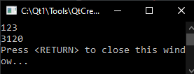

Nhập một số nguyên từ bàn phím.Đổi chỗ giá trị của 4 bit cao của byte cao và 4 bit thấp của byte thấp của số đã nhập.
Định dạng đầu vào:số nguyên dương 2 byte (thập lục phân)
Định dạng đầu ra:số nhận được ở dạng thập lục phân.
Ví dụ (dòng đầu tiên là đầu vào của chuỗi nguồn, dòng thứ hai là đầu ra của kết quả).
